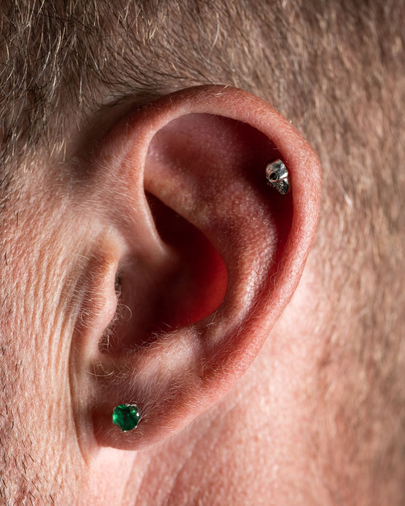

Brighton · Piercing Studio · Est. 2016
The chart is
the promise
I’m Mara Quinn. I run Needle & Steel, a piercing studio in Brighton where the healing times are printed on the wall in real months, not whispered in hopeful weeks. Every May, festival season fills this city, and half my consultations end with me talking someone out of the date they walked in with. A helix pierced the week before a festival — then slept on in a tent and taken swimming in the sea — is a piercing I would spend the whole summer rescuing. Book the piercing for the life you actually live and it heals. This page is my chart wall: the menu, the healing table, the sterile chain, and a planner that does the same arithmetic I do at the counter.

The piercing menu & healing table
Fees include starter jewelleryEvery fee below includes the piercing, the starter jewellery listed, all check-ups and the first downsize. Healing ranges are the honest ranges — cartilage is measured in months because that is how cartilage heals. The planner in Chart 02 plans on the long end of each range, because that is the date I am willing to promise you.
| Piercing | Gauge | Starter jewellery | Healing — plan for | Fee incl. jewellery |
|---|---|---|---|---|
| Earlobe (single) | 18G | Flat-back labret, titanium | 6–8 weeks | £30 |
| Helix | 16G | Flat-back labret, titanium | 6–12 months | £40 |
| Flat helix | 16G | Flat-back labret, titanium | 6–12 months | £40 |
| Conch | 16G | Flat-back labret, titanium | 6–12 months | £45 |
| Tragus | 16G | Flat-back labret, titanium | 6–12 months | £40 |
| Daith | 16G | Clicker ring, titanium | 6–12 months | £45 |
| Nostril | 18G | Flat-back labret, titanium | 4–6 months | £35 |
| Septum | 16G | Circular barbell, titanium | 3–4 months | £40 |
| Eyebrow | 16G | Curved barbell, titanium | 3–4 months | £40 |
| Labret / lip | 16G | Flat-back labret, titanium | 3–4 months | £40 |
| Tongue | 14G | Barbell, titanium (long starter bar) | 4–6 weeks | £45 |
| Navel | 14G | Curved barbell, titanium | 9–12 months | £45 |
| Industrial | 14G | Straight barbell, titanium | 9–12 months | £55 |
Pairs of lobes are £45 for both. A second cartilage piercing in the same sitting is £10 off — two healing clocks at once is the sensible limit, and I will talk you out of a third.
The piercing planner
Works backwards from your dateTell it the piercing and the day it has to be healed by — a wedding, a swim holiday, the first day of a job. It reads the healing table in Chart 01, plans on the long end, and gives you the latest sensible booking date, your check-up schedule, and the full cost. If the date cannot be met, it says so and tells you what can.
The sterile chain
Printed, in order, no gaps- 01
The needle
Single-use and sterile-packed. It is opened in front of you, used once, and dropped into the sharps bin in front of you. It has touched one person: you.
- 02
The autoclave
Every tool and every piece of jewellery runs a Class B vacuum cycle at 134°C before it goes near skin. Pouches carry indicator strips that change colour only at full temperature — check yours before we start.
- 03
The spore test
A biological spore test — the only test that proves an autoclave kills the hardest spores — runs every Monday morning. The results log is pinned by the door. Read it while you wait; nobody has ever minded me suggesting it.
- 04
The jewellery
Implant-grade titanium to ASTM F136, or solid 14k gold. Ultrasonically cleaned, then autoclaved in its own sealed pouch. If a piece of jewellery’s material cannot be named to a standard, it does not enter this studio — including jewellery bought from market stalls and festival traders, however pretty the stall looked.
- 05
The room
Gloves changed between every stage. Surfaces barrier-wrapped. The chair stripped and disinfected between clients. Nothing in the room is decorative; everything in it wipes down.
From the case charts
Full charts on the Case Charts pageA curated ear, built in three sittings across seven months — a conch in October, a flat and a helix the following February, every downsize on schedule — and finished in solid gold the next autumn. Planning it in stages is the whole reason it healed without a single setback.
“Mara drew my ear on a chart before she touched it, and told me which two piercings we were not doing yet. Seven months sounds slow until you realise I never had one bad week with any of them.”
— Priya, from Case Chart 03, the curated ear
Book a consultation
Free · 15 minutes · no obligationConsultations are where the honest conversations happen — anatomy checked, dates worked backwards, and sometimes a polite no. Piercings are by appointment; walk-ins are welcome for jewellery, check-ups and advice.